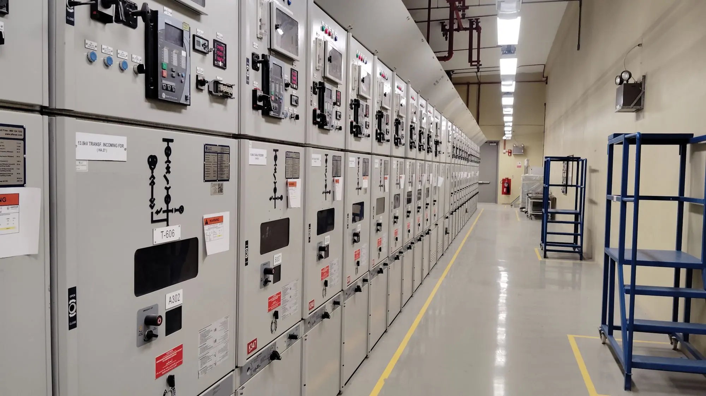

Ingeniería, energía y mantenimiento
La energía es el eslabón que casi nadie mide hasta que falla. Este eje levanta cargas, prueba protecciones, corrige iluminación y deja un plan de mantenimiento con registro por sede.

Alcance
- Mantenimiento eléctrico preventivo y correctivo: tableros, subestación, protecciones y puestas a tierra.
- Iluminación LED industrial en bodega, muelles y patios.
- Adecuaciones locativas menores y obras civiles asociadas a tecnología.
- Mantenimiento de instalaciones: cubiertas, canalizaciones y estructuras de soporte.
- Diagnósticos de infraestructura y termografía.
- Soluciones de eficiencia energética con medición y verificación.
Cómo se construye
Ningún eje empieza con una cotización: empieza con una medición. Estos cuatro pasos se repiten por sede.
- 01Diagnóstico
Se levanta el estado del eje en la sede priorizada: inventario, criticidad y brecha contra el estándar.
- 02Alcance cerrado
Se define qué se hace, qué no se hace, en qué ventana y con qué criterio de aceptación.
- 03Cotización
Ingeniería, materiales, mano de obra, HSE y garantía, con cantidades medidas en sitio.
- 04Ejecución y acta
Obra con planos as-built, pruebas de aceptación y acta de entrega a satisfacción.
Entregables y criterios de aceptación
- Estudio de cargas y balance de circuitos por sede.
- Informe termográfico con hallazgos priorizados.
- Diseño de iluminación con cálculo lumínico y ahorro estimado.
- Plan de mantenimiento con frecuencias y responsables.
- Registro fotográfico y acta de cada intervención.
Qué no incluye, dicho claro
- Estudios de suelos o estructurales mayores.
- Reposición o ampliación de la subestación del CEDI.
- Trámites y aprobaciones ante el operador de red.
- IVA, retenciones e impuestos de ley.
- Ampliaciones de alcance no previstas en la visita técnica.
Cómo se activa
El eje no se contrata completo de una vez: entra por fases, según lo que arroje el diagnóstico y lo que ALTIPAL decida en cada compuerta.
- Fase 1 · Estabilización. Tableros críticos, protecciones y puesta a tierra.
- Fase 2 · Modernización. Iluminación LED y adecuaciones locativas asociadas.
- Fase 3 · Inteligencia. Medición de consumo y verificación de ahorro.
Siguiente paso: incluir este eje en el alcance de la Fase 0 y confirmar la sede piloto.
Ver los próximos pasosFUNDASERINCO · Propuesta CEDI 360 para ALTIPAL · 2026 · Pereira, Risaralda · +57 304 681 4396